You have trained a model. How do you know if it is any good? A model that looks convincing on a handful of images can quietly fail on the rest of your dataset, and a model that scores well on one measure of quality can perform poorly on another. Choosing the right way to measure quality is therefore just as important as the training itself.
In this chapter we will look at how metrics and losses differ, how to pick measures that actually reflect your scientific goal, and how to use held-out test data to get an honest estimate of how your model will behave on new images. We will focus on segmentation and cell tracking as concrete examples, but the principles apply broadly.
10.1 Metrics and Losses
In Chapter 9, you learned about how to train a machine learning model. Recall that, this requires selecting a loss function: a function that represents how far the model’s output is from your desired ground truth. As training relies on gradient descent, the loss must be differentiable; the algorithm needs the slope of the loss with respect to every parameter to know which direction to step. The model’s parameters are optimized to minimize the loss on a training dataset, and you evaluate the same loss on a held-out validation dataset to get an idea of how well your model would perform on new data.
Once you’ve trained a model, or potentially several, evaluating a diverse set of metrics on testing data allows you to get a better picture of the quality of the model. A metric is any function that scores your predictions. Unlike a loss, it does not have to be differentiable because it is not used for optimization. This means that you can get more specific which how you evaluate the quality of your model output, as we’ll see below.
Consider the case of nuclear segmentation. Suppose you have fluorescently labelled nuclei, as in (Figure 10.1), that you want to segment for downstream analysis. Two standard losses for this task are binary cross entropy (BCE), and mean squared error (MSE). These functions are often optimized for the task of semantic segmentation, separating foreground from background. While both of these are differentiable functions, they have very different pros and cons when it comes to training a model.
show code
import contextlib, io, loggingfrom cellpose import modelsimg = ski.data.cells3d()[21:]image = img[18][1] # nucleus channel# Run Cellpose quietly for displaylogging.getLogger('cellpose').setLevel(logging.ERROR)with contextlib.redirect_stdout(io.StringIO()), contextlib.redirect_stderr(io.StringIO()): _model = models.CellposeModel(gpu=False, model_type='nuclei') _cp_labels, _, _ = _model.eval(image, diameter=None, channels=[0, 0])# Use make_ground_truth for bw/filled/label_image so that failure modes# (holes, split nuclei) are visible in the downstream figuresbw, filled, label_image = make_ground_truth(image)image_label_overlay = label2rgb(_cp_labels, image=image, bg_label=0, alpha=0.2)plt.imshow(image_label_overlay)plt.axis("off")plt.show()
Downloading file 'data/cells3d.tif' from 'https://gitlab.com/scikit-image/data/-/raw/2cdc5ce89b334d28f06a58c9f0ca21aa6992a5ba/cells3d.tif' to 'C:\Users\runneradmin\AppData\Local\scikit-image\scikit-image\Cache\0.26.0'.
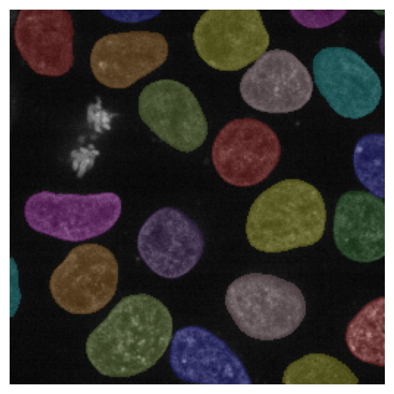
Figure 10.1: Our cells, with the ground truth overlaid. This ground truth is the output of a Cellpose1 model, but in practice it should be manually annotated.
NoteBinary Cross-Entropy (BCE)
Binary cross-entropy penalizes the model based on how confident it is in the wrong answer. This loss requires the output to be interpretable as a probability — it asks “is this pixel foreground or background?” and treats all wrongly-classified pixels the same way, whether they are at a cell boundary, inside a hole, or belong to an entirely missing cell. For ground truth label \(y_i \in \{0,1\}\) and predicted probability \(\hat{y}_i \in [0,1]\): \[\text{BCE} = -\frac{1}{N} \sum_{i=1}^{N} \bigl[ y_i \log(\hat{y}_i) + (1-y_i)\log(1-\hat{y}_i) \bigr]\]
NoteMean Squared Error (MSE)
The mean squared error penalizes the model proportionally to the squared difference between its prediction and the ground truth: \[\text{MSE} = \frac{1}{N} \sum_{i=1}^{N} (y_i - \hat{y}_i)^2\] MSE measures how far the prediction is from the target value, and does not require the output to be a probability — it works equally well when the model produces a continuous map such as a distance transform or a confidence score. Because it sums squared errors over all pixels, it is sensitive to the total extent of the error: predicting an entire missing cell as background accumulates far more MSE than a few wrongly-classified boundary pixels.
Luckily, we can keep track of both of these things by using one of these functions as a metric. For example, as we optimize binary cross-entropy, we can compute the mean-squared error on the validation data. Watching multiple numbers evolve during training gives a fuller picture than any single number alone.
After training a model for segmantic, or foreground/background, segmentation, it is common to use a method such as watershed to obtain instance segmentations: segmentation masks for each individual nucleus. How well we can do this task, followed by what downstream analysis we intend for our instance segmentations, cannot be easily measured with BCE or MSE. One can imagine other functions, however, that could more accurately describe “good performance”.
show code
predictions = [ make_undersegmented(filled), make_oversegmented(filled), make_missing_cells(label_image), make_holey(bw),]for pred in predictions: fig, ax = plt.subplots(figsize=(4, 4)) ax.imshow(label2rgb(pred, image=image, bg_label=0)) ax.axis("off") plt.show()
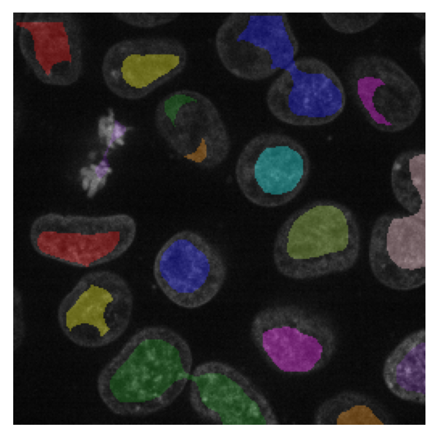
(a) Undersegmented: masks shrink away from cell borders
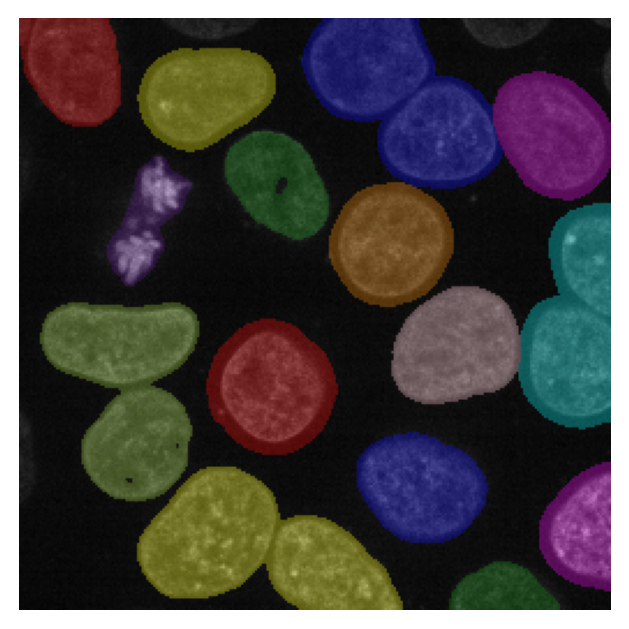
(b) Oversegmented: masks are too large, adjacent cells merge
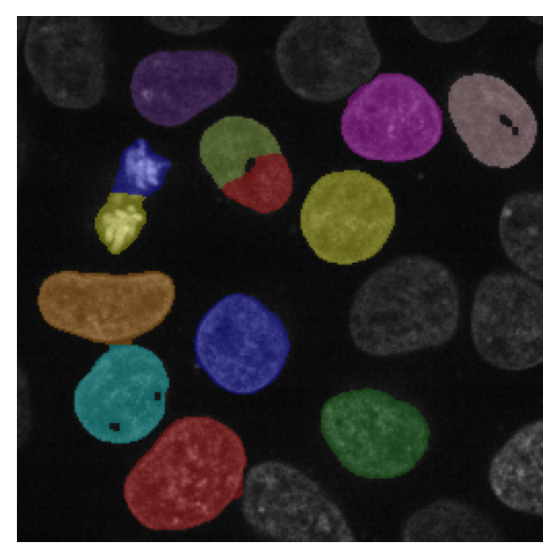
(c) False negatives: missing cells and split nuclei.
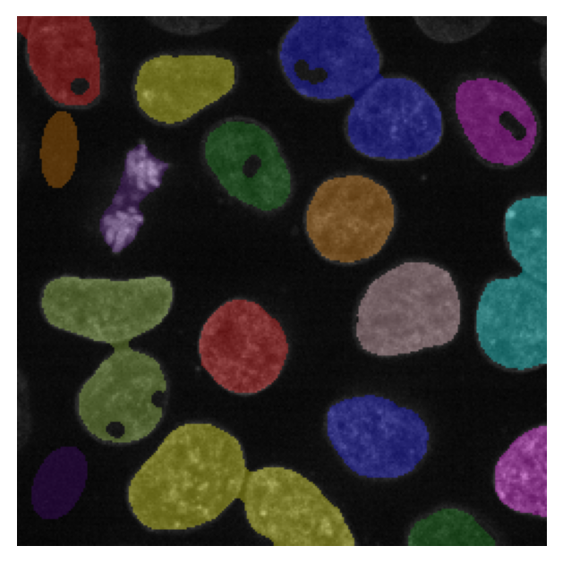
(d) Holes and false positives: gaps inside cells and spurious detections.
Figure 10.2: Four examples of segmentations from different models. Each has a distinct failure mode that is hard to spot at a glance.
If we are interested in measuring the size of each nucleus, a model which under (Figure 10.2a) or over segments nuclei (Figure 10.2b) would create erroneous measurements of size. Instead a model that misses some detections (Figure 10.2c) might be preferable as long as the detections that exist correctly reflect the size of the nucleus. In this case an appropriate metric would be pixel-overlap metrics like Intersection over Union (IoU) or the Dice coefficient. A metric that captures this will look very different from BCE or MSE.
NoteIoU and DICE are overlap metrics.
Both metrics quantify the overlap between a predicted region \(B\) and the ground truth \(A\), by comparing the intersection of the two regions (\(\cap\)) and their union (\(\cup\)). Both metrics range from 0 (no overlap) to 1 (perfect overlap).
\[\text{IoU}(A, B) = \frac{|A \cap B|}{|A \cup B|} \qquad \text{DICE}(A, B) = \frac{2\,|A \cap B|}{|A|+|B|}\]
DICE is the harmonic mean of precision and recall: it balances false positives (predicted pixels outside \(A\)) and false negatives (pixels in \(A\) missed by \(B\)) equally. IoU is slightly stricter, because every falsely predicted pixel inflates the union without affecting the sum of the two areas. In practice the two metrics rank models in the same order.
Note
The DICE coefficient is the F1-score applied to pixel-level segmentation masks, and the two names are sometimes used interchangeably in the biomedical imaging literature.
show code
import matplotlib.pyplot as pltfrom matplotlib.patches import Rectangle, Patch, Polygon as MplPolygonimport numpy as npnavy, orange, green ="#1a35e0", "#e47a10", "#2a9d2a"fig, ax = plt.subplots(figsize=(5, 3))ax.set_xlim(0, 5)ax.set_ylim(0, 5)ax.set_xticks(np.arange(0, 6, 0.5))ax.set_yticks(np.arange(0, 6, 0.5))ax.grid(True, color="lightgray", lw=0.8)ax.tick_params(labelbottom=False, labelleft=False, length=0)A = (0.5, 1, 2, 4) # x, y, width, heightB = (1.5, 1.5, 3, 3)ax.add_patch(Rectangle(A[:2], A[2], A[3], facecolor=navy, alpha=0.5))ax.add_patch(Rectangle(B[:2], B[2], B[3], facecolor=orange, alpha=0.5))# Union: outline that follows the actual shape of A ∪ Bunion_verts = [ (A[0], A[1]), # bottom-left of A (A[0]+A[2], A[1]), # bottom-right of A (A[0]+A[2], B[1]), # down to bottom of B (B[0]+B[2], B[1]), # bottom-right of B (B[0]+B[2], B[1]+B[3]), # top-right of B (A[0]+A[2], B[1]+B[3]), # back to A's right edge at top of B (A[0]+A[2], A[1]+A[3]), # top-right of A (A[0], A[1]+A[3]), # top-left of A]ax.add_patch(MplPolygon(union_verts, closed=True, facecolor="none", edgecolor="black", lw=2, linestyle="--"))ix0, iy0 =max(A[0], B[0]), max(A[1], B[1])ix1, iy1 =min(A[0]+A[2], B[0]+B[2]), min(A[1]+A[3], B[1]+B[3])ax.add_patch(Rectangle((ix0, iy0), ix1-ix0, iy1-iy0, facecolor=green, alpha=0.85, edgecolor="white", hatch="////"))legend_elements = [ Patch(facecolor=navy, alpha=0.5, label="A"), Patch(facecolor=orange, alpha=0.5, label="B"), Patch(facecolor=green, alpha=0.85, hatch="////", label="A ∩ B"), Patch(facecolor="none", edgecolor="black", lw=2, linestyle="--", label="A ∪ B"),]ax.legend(handles=legend_elements, loc="upper center", bbox_to_anchor=(0.5, -0.02), ncol=2, frameon=False, fontsize=14)
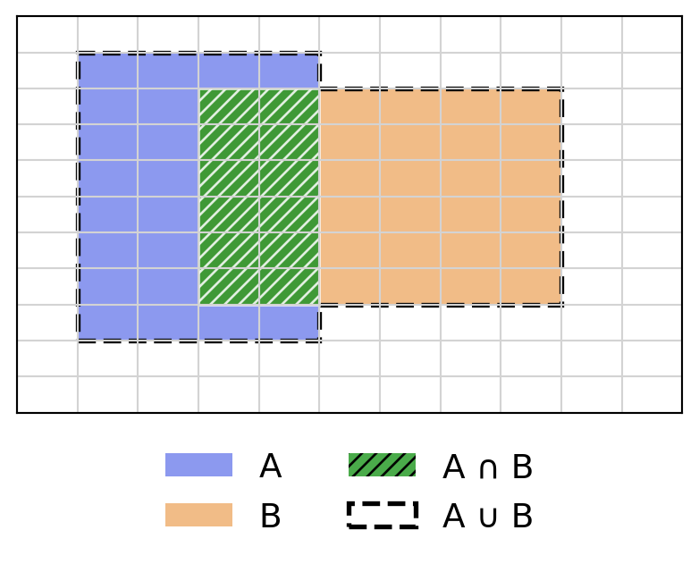
Alternatively, if we are interested in counting the number of nuclei, a model which changes the size of the nuclei should not impact the analysis. However a model that misses nuclei (Figure 10.2c), detects artifacts as nuclei (Figure 10.2d), merges multiple nuclei into one (Figure 10.2b), or splits a single nucleus into multiple (Figure 10.2c) would introduce errors into the final counts. In this case, a metric built around per-instance detection, such as precision and recall (or F1-score) after matching predicted masks to ground truth, captures the problems that matter to the analysis. It will also reveal the false positives and false negatives that would need correction. Different downstream uses call for different metrics.
NotePrecision, recall, and F1-score are instance-level metrics.
A predicted instance is a true positive (TP) if it sufficiently overlaps a ground-truth instance (e.g. IoU \(\geq 0.5\)), a false positive (FP) if it has no matching ground truth, and a false negative (FN) if a ground-truth instance was never detected.
Precision answers “of all predicted instances, how many were correct?”; recall answers “of all real instances, how many were found?”; F1 is their harmonic mean.
show code
import matplotlib.pyplot as pltfrom matplotlib.patches import Patchfrom matplotlib.colors import ListedColormapimport numpy as npnavy, orange, green ="#1a35e0", "#e47a10", "#2a9d2a"H, W =300, 500# raster griddef ellipse_mask(cx, cy, rx, ry):"""Boolean mask for an ellipse in axis coordinates [0,10] x [0,6].""" x = np.linspace(0, 10, W) y = np.linspace(0, 6, H) xx, yy = np.meshgrid(x, y)return ((xx - cx) / rx)**2+ ((yy - cy) / ry)**2<=1# Label image: 0=bg, 1=GT only (orange), 2=pred only (blue), 3=overlap (green)img = np.zeros((H, W), dtype=int)# True positives: GT and prediction ellipses slightly offsettps = [ # gt_x, gt_y, gt_rx, gt_ry, dx, dy (prediction offset) (2.0, 3.0, 1.0, 0.8, 0.4, 0.3), (5.0, 3.8, 0.9, 1.0, -0.3, 0.4), (7.5, 2.0, 1.0, 0.85, 0.35,-0.3), (4.5, 1.2, 0.8, 0.7, -0.25, 0.3),]for cx, cy, rx, ry, dx, dy in tps: gt = ellipse_mask(cx, cy, rx, ry) pred = ellipse_mask(cx+dx, cy+dy, rx, ry) img[gt &~pred] =1 img[pred &~gt ] =2 img[gt & pred] =3# False negatives — ground truth only (orange)for cx, cy, rx, ry in [(3.0, 5.0, 0.85, 0.7), (8.5, 4.5, 0.9, 0.8)]: img[ellipse_mask(cx, cy, rx, ry)] =1# False positives — prediction only (blue)for cx, cy, rx, ry in [(1.0, 1.0, 0.8, 0.9), (6.5, 5.0, 0.9, 0.75)]: img[ellipse_mask(cx, cy, rx, ry)] =2cmap = ListedColormap(["#ffffff", orange, navy, green])fig, ax = plt.subplots(figsize=(5, 3))ax.imshow(img, cmap=cmap, vmin=0, vmax=3, extent=[0, 10, 0, 6], origin="lower", aspect="auto")ax.axis("off")legend_elements = [ Patch(facecolor=green, label="Matched (TP)"), Patch(facecolor=orange, label="Ground truth only (FN)"), Patch(facecolor=navy, label="Prediction only (FP)"),]ax.legend(handles=legend_elements, loc="upper center", bbox_to_anchor=(0.5, -0.02), ncol=1, frameon=False, fontsize=9)
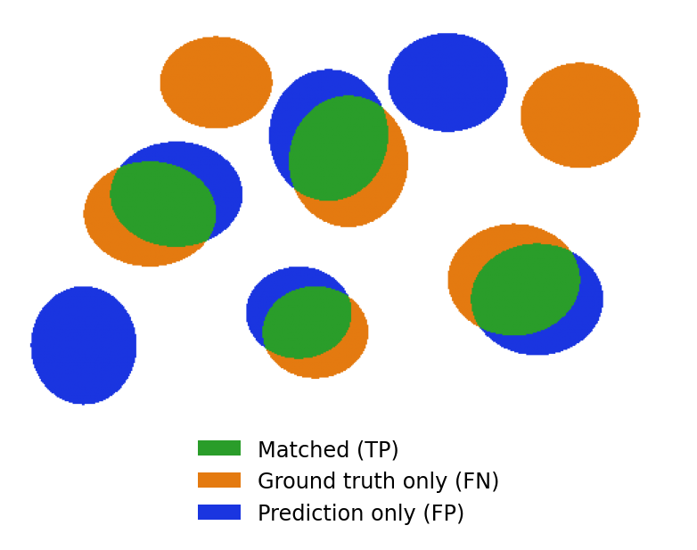
Open the callouts below for more metrics that are common in image analysis. You can find many other examples of metrics for various tasks, along with their pitfalls at MetricsReloaded.
NoteThe Hausdorff distance focuses on boundaries.
The Hausdorff distance measures how far apart two sets of boundary points are at their worst-case point. For boundary point sets \(A\) and \(B\):
A small Hausdorff distance means every point on one boundary has a close counterpart on the other.
show code
import matplotlib.pyplot as pltimport numpy as npnavy, orange, green ="#1a35e0", "#e47a10", "#2a9d2a"fig, ax = plt.subplots(figsize=(5, 3))ax.set_xlim(0, 5)ax.set_ylim(0, 5)ax.set_xticks(np.arange(0, 6, 0.5))ax.set_yticks(np.arange(0, 6, 0.5))ax.grid(True, color="lightgray", lw=0.8)ax.tick_params(labelbottom=False, labelleft=False, length=0)theta_f = np.linspace(0, 2* np.pi, 300)theta_c = np.linspace(0, 2* np.pi, 20, endpoint=False)# A: ground truth boundary (circle)A_line = np.stack([2.5+1.5* np.cos(theta_f), 2.5+1.5* np.sin(theta_f)], axis=1)A_pts = np.stack([2.5+1.5* np.cos(theta_c), 2.5+1.5* np.sin(theta_c)], axis=1)# B: predicted boundary — slightly larger and offsetB_line = np.stack([2.9+1.8* np.cos(theta_f), 2.7+1.8* np.sin(theta_f)], axis=1)B_pts = np.stack([2.9+1.8* np.cos(theta_c), 2.7+1.8* np.sin(theta_c)], axis=1)ax.plot(A_line[:, 0], A_line[:, 1], color=navy, lw=2, label="A")ax.plot(B_line[:, 0], B_line[:, 1], color=orange, lw=2, label="B")# Draw nearest-neighbour lines from each point in A to its closest point in Bdists = np.linalg.norm(A_pts[:, None] - B_pts[None], axis=2)nn = np.argmin(dists, axis=1)for i inrange(len(A_pts)): ax.plot([A_pts[i, 0], B_pts[nn[i], 0]], [A_pts[i, 1], B_pts[nn[i], 1]], color="lightgray", lw=0.7, zorder=1)# Highlight the worst-case pair (the Hausdorff point)w = np.argmax(dists[np.arange(len(A_pts)), nn])ax.annotate("", xy=(B_pts[nn[w], 0], B_pts[nn[w], 1]), xytext=(A_pts[w, 0], A_pts[w, 1]), arrowprops=dict(arrowstyle="<->", color=green, lw=2.0), zorder=3)mid = (A_pts[w] + B_pts[nn[w]]) /2ax.text(mid[0] -0.1, mid[1] -0.3, "$d_H$", color=green, fontsize=13, va="center")ax.legend(loc="upper center", bbox_to_anchor=(0.5, -0.02), ncol=2, frameon=False, fontsize=14)
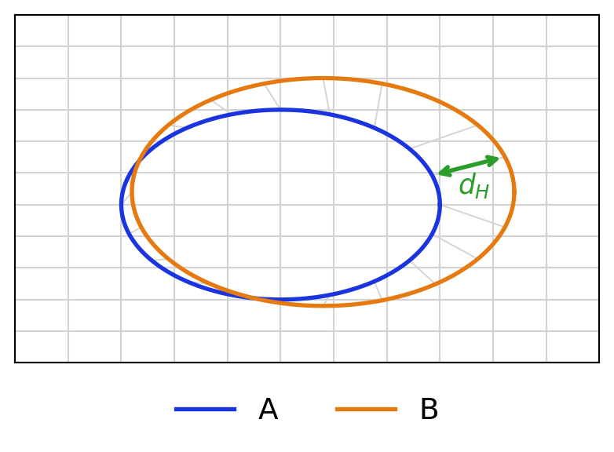
NoteAverage precision rewards finding the right instances.
Average Precision (AP) summarizes the precision–recall trade-off across confidence thresholds. A predicted instance counts as a true positive only if its IoU with a ground-truth instance exceeds a threshold \(x\):
\[\text{AP}_x = \sum_{k} (R_k - R_{k-1})\, P_k\]
where \(P_k\) and \(R_k\) are precision and recall at the \(k\)-th confidence threshold after matching predictions to ground-truth at IoU \(\geq x\). Higher \(x\) demands more precise localization.
show code
import matplotlib.pyplot as pltimport numpy as npnavy, orange ="#1a35e0", "#e47a10"# Synthetic precision-recall curverecall = np.array([0.0, 0.15, 0.35, 0.55, 0.70, 0.82, 0.92, 1.0])prec = np.array([1.0, 0.92, 0.82, 0.70, 0.58, 0.44, 0.28, 0.0])fig, ax = plt.subplots(figsize=(5, 3))ax.set_xlim(-0.05, 1.1)ax.set_ylim(-0.05, 1.15)ax.set_xlabel("Recall ($R$)", fontsize=11)ax.set_ylabel("Precision ($P$)", fontsize=11)ax.set_xticks([0.0, 0.5, 1.0])ax.set_yticks([0.0, 0.5, 1.0])ax.grid(True, color="lightgray", lw=0.8)# Step function and shaded area under the curve = APax.step(recall, prec, where="post", color=navy, lw=2)ax.fill_between(recall, prec, step="post", alpha=0.25, color=navy, label="AP")# Mark the individual (R_k, P_k) threshold pointsax.scatter(recall[1:-1], prec[1:-1], color=orange, s=45, zorder=5, label="$(R_k, P_k)$")ax.legend(loc="upper right", frameon=False, fontsize=11)
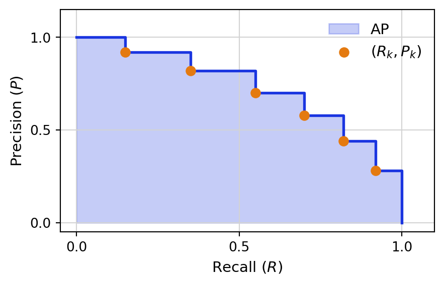
Some of these may not be differentiable, and therefore cannot be directly optimized; they cannot be used as losses. The practical workflow is therefore: choose a differentiable loss to train the model, then evaluate a richer set of metrics on held-out data to judge whether the trained model actually behaves the way you need it to.
Tip
Explore this demo to see the direct impact of different segmentation errors on a variety of metrics.
As you’ve seen, there are many different metrics available for every task. Each will be more or less useful depending on what types of errors you can or cannot accept in your final predictions. So, how do you choose which metrics to measure and which ones to pay attention to?
10.2 What Metric to Pick?
When selecting a metric or metrics to use for evaluating a model, there are two key axes to consider. The first is the downstream analysis task that the data will be used for. The second is the time/cost needed to correct errors prior to that analysis task. In many cases the downstream analysis task will influence which types of errors can be tolerated.
This is why there is rarely one “correct” metric for a task like segmentation; the same set of predicted masks can look excellent by one measure and mediocre by another, and the right choice depends on tracing through how errors in the output propagate into errors in the analysis you actually care about. In some cases no single number can capture this tradeoff, and getting a picture of quality you can act on requires reporting several complementary metrics side by side, or splitting evaluation into stages that reflect distinct sources of error. This tension is especially visible in cell tracking, where a solution can be scored separately on how well it detects cells in each frame and on how well it links them across frames, and both pieces have to be weighed together to judge whether the result is fit for the application at hand.
10.2.1 Cell Tracking Metrics
Cell tracking is typically approached as a multi-stage task. The first stage is detection where cells in each frame of the time series are detected using point detections, bounding boxes or segmentation masks. In the second stage, cells are connected between frames. For the purposes of evaluation, it is helpful to consider a tracking solution as a graph where each cell in a timepoint is a node and edges connect the cells (or nodes) across frames (Figure 10.3). A cell dividing into two daughters appears as a node with two outgoing edges, so a tracking solution is naturally represented as a set of lineage trees. Metrics that evaluate tracking solutions can consider both the performance of the detection phase (the nodes) and the performance of the linking (the edges).
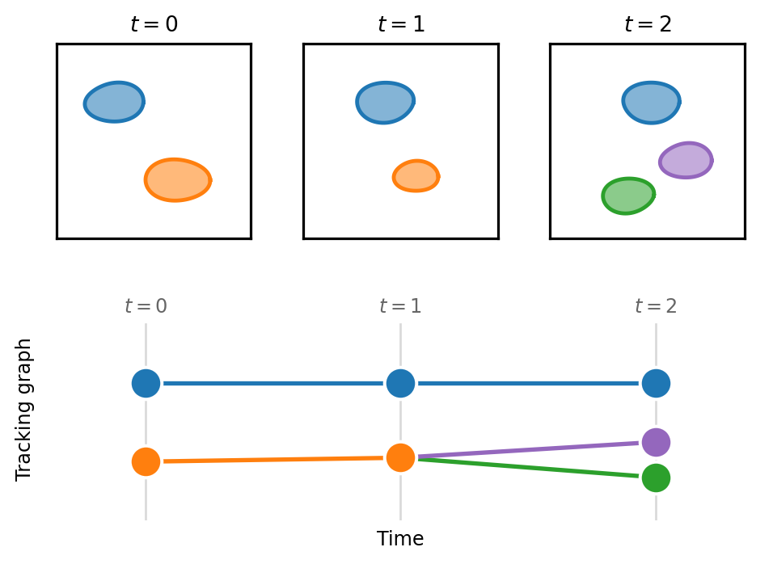
Figure 10.3: Cell tracking represented as a graph. (Top) Segmentation masks detect a few cells in each of three time points; the blue cell persists across all three frames while the orange cell divides into two daughters (green and purple) at \(t = 2\). (Bottom) The corresponding tracking graph places one node per detected cell, with edges linking the same cell across frames. Node columns and colors align with the masks above, and the division appears as a node with two outgoing edges.
With this framework, we can consider some of the common errors that appear in tracking solutions. Figure 10.4a illustrates basic node errors of a false positive detection (shown in red) and a missing blue detection. The missing node also leads to two missing edges. Often in biology when we are interested in cell tracking, there is a particular value placed an the detection of cell divisions so that cell lineages can be reconstructed over several rounds of divisions. As such we need to consider the specific types of errors that occur involving cell divisions. Figure 10.4b illustrates a missing edge that results in a missed division detection. Figure 10.4c instead shows a case where a division is detected, but one daughter is incorrectly assigned to the division leading to an incorrect lineage tree. Finally, Figure 10.4d illustrates an identity switch where edges are incorrectly assigned in a single frame leading to a swap of lineage identity.
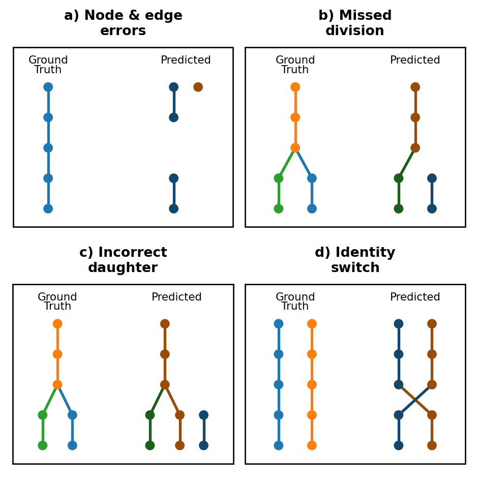
Figure 10.4: Common types of tracking errors. (a) This example prediction demonstrates multiple types of node and edge errors: false negative node, false negative edges and false positive node. (b) This example shows a missed division as the result of a missed edge between a parent and a daughter. (c) This example shows a division where the parent was correctly identified, but one of the daughters was incorrectly assigned to a different node. (d) This is an example of an identity switch where two nodes are swapped and assigned to the incorrect lineage part way through the lineage.
There is a common inclination to use a single metric that is intended to capture overall performance on the task. In cell tracking, there are two common single metrics. The first is the TRA2 score defined by the Cell Tracking Challenge. A second unified metric is CHOTA3 (Cell-specific Higher Order Tracking Accuracy). Single metrics can be convenient; however, they are uninformative when the intention is to evaluate and then improve a tracking solution. A unified metric does not indicate what types of errors are present.
This score is a weighted sum of node and edge errors that is normalized between 0 and 1. It is derived from the Acyclic Oriented Graph Matching4 (AOGM) measure which reflects the number of changes needed to turn the reference graph into the target graph.
This metric captures local correctness, global coherence and aspects of lineage tracking. CHOTA is computed as \[\textrm{CHOTA} = \sqrt{\frac{\sum_{c \in \textrm{TP}} A^\sigma(c)}{|\textrm{TP}| + |\text{FN}| + |\text{FP}|}}\]
where \(A^\sigma(c)\) is a lineage-oriented association score that measures how well predicted trajectories overlap with ground truth trajectories, accounting for all cells connected by lineage.
Figure 10.5 illustrates three tracking failure modes and the metric scores for each solution. As the discussion below shows, solutions that fail in very different ways can end up with similar overall scores, and the two unified metrics can even disagree with each other about which solution is preferable.
Consider the three failure modes in Figure 10.5. The two unified metrics produce very different rankings of solutions. The TRA score ranks no divisions (0.957) similarly to sparse edges (0.947) and far above missing nodes (0.732). In contrast, while all solutions score relatively low on CHOTA, the missing node solution ranks highest (0.560) followed by no divisions (0.333) and sparse edges (0.297). Because TRA and CHOTA weight node, edge and lineage errors differently, two established “single number” metrics can disagree about which solution is preferable. Neither score reveals whether the underlying problem is due to missed detections, broken links, or failure to find divisions. To identify the specific failure modes, we need to examine metrics for that we need to look at the node, edge and division metrics reported alongside them.
The per-component metrics reveal the distinct failure mode in each solution. The missing node solution (b) has the lowest node F1 (0.858) of the three because a quarter of detections are dropped; since each dropped node also severs the edges that pass through it, this single error mode depresses edge F1 (0.798) and division F1 (0.399) as well. The sparse edge (c) and no-division (d) solutions both keep every detection (node F1 = 1.000) and lose the same fraction of edges (edge F1 = 0.800), yet they are far from equivalent: sparse edges still recovers roughly half of the true divisions (division F1 = 0.505) because the deleted edges are scattered at random, while the no-division solution deterministically removes every division edge, so no division is ever proposed and division F1 is undefined.
Show code to generate a set of lineage trees with regular divisions
import networkx as nxdef build_lineage_tree( n_starting_nodes: int=10, n_frames: int=30, division_every: int=5,) -> nx.DiGraph:""" Build a lineage tree as a directed graph. - Starts with `n_starting_nodes` roots at frame 0 - Every `division_every` frames, each live cell divides into 2 daughters - Between division frames, cells persist as a single descendant Nodes are labeled like: cell_id = "c0", "c1", ... and store: - frame - root """ G = nx.DiGraph() cell_counter =0 live_cells = []# Create starting nodes at frame 0for root inrange(n_starting_nodes): node = cell_counter cell_counter +=1 G.add_node(node, frame=0, root=root) live_cells.append(node)# Advance through framesfor frame inrange(1, n_frames +1): next_live_cells = [] is_division_frame = (frame % division_every ==0)for parent in live_cells: root = G.nodes[parent]["root"]if is_division_frame:# Parent divides into two daughtersfor _ inrange(2): child = cell_counter cell_counter +=1 G.add_node(child, frame=frame, root=root) G.add_edge(parent, child) next_live_cells.append(child)else:# Parent continues as one descendant child = cell_counter cell_counter +=1 G.add_node(child, frame=frame, root=root) G.add_edge(parent, child) next_live_cells.append(child) live_cells = next_live_cellsreturn Gdef sparsify_edges(g, mod=3): del_edges = []for i, edge inenumerate(g.edges()):if i % mod ==0: del_edges.append(edge) g.remove_edges_from(del_edges)def remove_divs(g): div_edges = []for node in g.nodes:if g.out_degree(node) ==2: div_edges.extend(g.edges(node)) g.remove_edges_from(div_edges)def remove_nodes(g, mod=4): del_nodes = []for i, node inenumerate(sorted(g.nodes)):if g.nodes[node]['frame'] >0and i % mod ==0: del_nodes.append(node) g.remove_nodes_from(del_nodes)gt = build_lineage_tree(n_starting_nodes=10, n_frames=30, division_every=5)
Show code to compute metrics on tracking solutions using traccuracy
from traccuracy.matchers import Matchedfrom traccuracy import TrackingGraphfrom traccuracy.metrics import CTCMetrics, DivisionMetrics, BasicMetrics, CHOTAMetricdef compute_metrics(solution):"""Score a solution against the full ground-truth tree with traccuracy.""" matched = Matched( TrackingGraph(gt.copy(), frame_key='frame'), TrackingGraph(solution, frame_key='frame'), mapping=[(nid, nid) for nid in gt.nodes if nid in solution.nodes], matcher_info={}, ) results = {**CTCMetrics().compute(matched).results,**DivisionMetrics().compute(matched).results['Frame Buffer 0'],**BasicMetrics().compute(matched).results,**CHOTAMetric().compute(matched).results }return results
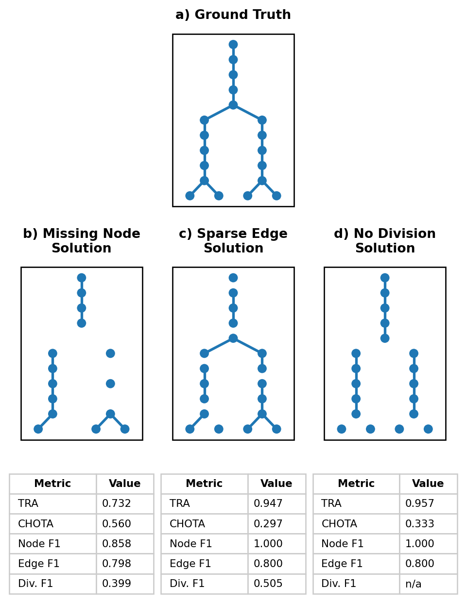
Figure 10.5: Tracking solutions with common failure modes, each scored with a panel of tracking metrics. Trees show a single representative lineage truncated to 10 frames; the metric tables are computed over the full dataset (10 lineages, 30 frames). Panel b shows a solution where every fourth node (detection) is missing. Panel c shows a solution where every third edge is missing. Panel d shows a solution where no divisions were predicted. Division precision/F1 are undefined (n/a) for the no-division solution because it predicts no divisions.
Whether an error is acceptable depends entirely on what the tracking result will be used for. If the downstream analysis measures single-cell metrics such as migration speed, the no-division solution is nearly as good as ground truth: every cell is detected, most links are correct, and the fact that no lineage relationships were ever proposed is irrelevant to the task. If instead the goal is to study clonal relationships or developmental lineages the no-division solution is worthless despite its high TRA, because it recovers zero divisions and can never support a lineage-based analysis. The missing node solution sits at the opposite end of this trade-off: it has the worst TRA of the three, but a downstream analysis focused on lineage structure might tolerate it better than that score suggests. Choosing a metric, or a small panel of metrics, should therefore start from the biological question at hand rather than from convenience.
A second, independent axis is how easy an error is to catch and fix once a human is proofreading the result, and it does not always line up with how tolerable the error is for the downstream analysis. Missing nodes and sparse edges leave a visible gap or an orphaned track segment, and the fix is local: add the missing node or edge back and reconnect two pieces that are otherwise correct. A systematically missed division is much harder to catch, because neither daughter track looks wrong on its own; the cells are simply tracked as if they had always been independent, so a curator scanning tracks has no local cue that a division was ever missed. The more tolerable error is therefore not necessarily the one with the better score on a given metric, but the one that is cheap to find and correct, particularly if missing detections are easy to flag and cheap to review manually.
10.3 Conclusion
We compute metrics to get a reasonable description of how well our model is expected to perform in the future, on unseen data. A single metric is rarely sufficient to fully evaluate a models performance as illustrated by Section 10.2.1. If multiple metrics are needed to fully evaluate a model, when do you run these metrics and on what data? As discussed in Section 9.3.5.4, you will minimally compute a loss both on your training and validation sets during the course of training. Some metrics can be easily computed on the validation dataset and used to select a checkpoint for further testing. These metrics should be computationally inexpensive to compute in order to avoid slowing down the training process. Typically these would be metrics that are computed on a pixel-pixel level. In contrast, consider metrics that are computed on an object level such as those discussed in Section 10.2.1. Each cell tracking metric requires a preliminary stage in which each ground truth cell is matched to a predicted cell prior to evaluation. While there are many different ways to perform the matching step, it is ultimately a slow and expensive process. Metrics that rely on a matching stage are best reserved for running on the final test data split. Table 10.1 elaborates on the stages of model evaluation and illustrates how metrics might be selected for a segmentation model.
Table 10.1: A comparison of stages of model evaluation. The segmentation example highlights specific metrics that would be used in each of these stages in a segmentation pipeline.
Stage
Speed of Computation
Data Split
Purpose
Segmentation Example
Training loss
Fast
Train
Guides gradient descent during training
BCE
Validation loss
Fast
Val
Enables monitoring of over/under fitting during training
BCE
Validation metrics
Fast
Val
Additional metrics that provide more insight into training progress outside the loss function and assist in checkpoint selection
MSE
Test metrics
Slow
Test
Final metrics that are run on test data in order to critically evaluate model performance and failure modes
Object-based recall and precision
Biological data varies from experiment to experiment, however, and whether the model will be robust to these variations remains somewhat of an open question. In the ideal case, we would like the models to be able to output a level of certainty along with its predicted segmentations or tracks. Unfortunately, uncertainty estimation remains an unsolved problem, methods such as test-time augmentation5,6 can give you an estimate if you have a good model of your data’s sources of noise.
NoteTest-time augmentation as a measure of uncertainty
Test-time augmentation is one way of quantifying the uncertainty of a model, by estimating the robustness of its outputs with regards to noise.
To apply TTA, you run the model multiple times on the same image, each time with a perturbation that reflects a realistic source of variation in your imaging system. For fluorescence microscopy, this might include: adding Poisson or Gaussian noise to simulate photon shot noise or detector read noise, shifting the intensity or contrast to mimic staining variability between experiments, or applying a slight blur to simulate focus drift. You then aggregate the predictions to get your final output.
The spread across the individual predictions acts as a proxy for uncertainty. Where every perturbed version produces nearly the same thing, we can be confident in the model is output. Regions Where the predictions disagree, however, may warrant manual review.
Note that TTA only captures uncertainty relative to the noise sources you have modelled. It will not detect failure modes shared by all augmentations, such as a systematic bias introduced during training.
The best measure of your model’s output, current and future, still remains a good testing dataset. Make sure to fully annotate a testing set that is diverse enough to be representative of future experiments. Compute a variety of metrics to understand the different types of failures you can expect, and to what extent. And finally, make sure to look at your model outputs in conjunction with your data! For most tasks, the best judge of quality is you.
AI Disclosure
AI language models (Anthropic’s Claude, specifically Claude Sonnet 5) were used during the preparation of this chapter. Their roles included drafting prose, generating code examples, and producing demonstration figures. All content was reviewed, revised, and verified by the human authors, who take full responsibility for the accuracy and scientific integrity of the final text. Selection of references was the work of the human authors.
Maška, M. et al. A benchmark for comparison of cell tracking algorithms. Bioinformatics30, 1609–1617 (2014).
3.
Kaiser, T., Ulman, V. & Rosenhahn, B. Chota: A higher order accuracy metric for cell tracking. in European conference on computer vision 122–138 (Springer, 2024).
4.
Matula, P. et al. Cell tracking accuracy measurement based on comparison of acyclic oriented graphs. PloS one10, e0144959 (2015).
5.
Moshkov, N., Mathe, B., Kertesz-Farkas, A., Hollandi, R. & Horvath, P. Test-time augmentation for deep learning-based cell segmentation on microscopy images. Scientific reports10, 5068 (2020).
6.
Wang, G. et al. Aleatoric uncertainty estimation with test-time augmentation for medical image segmentation with convolutional neural networks. Neurocomputing338, 34–45 (2019).
![]()